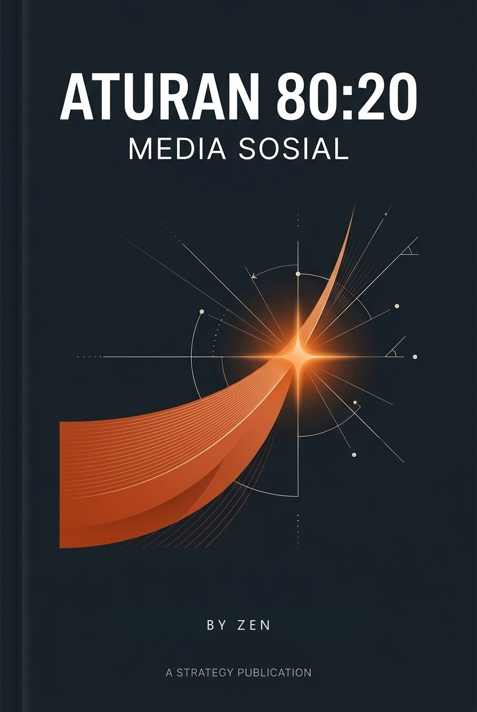
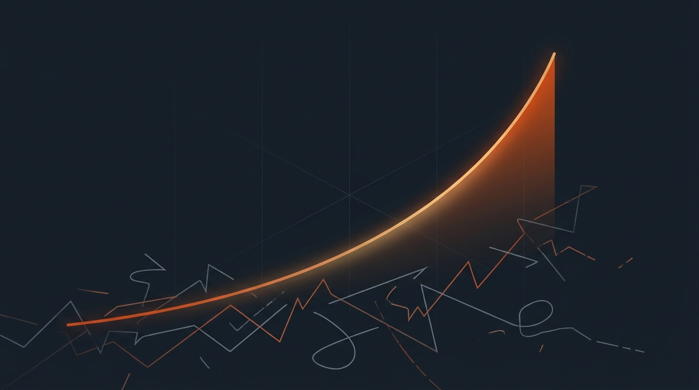
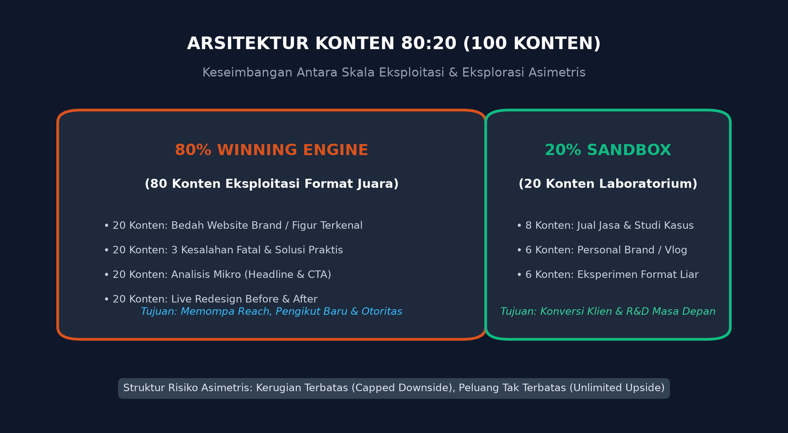
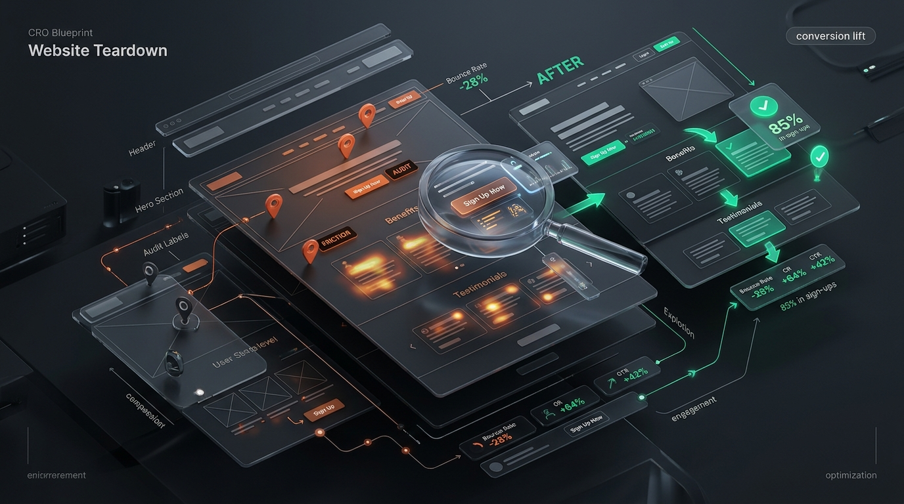
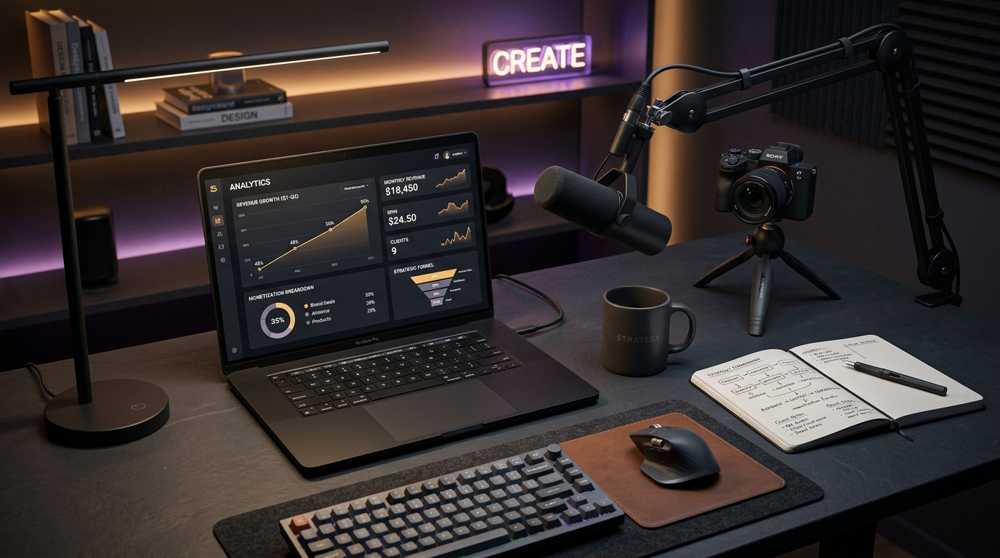
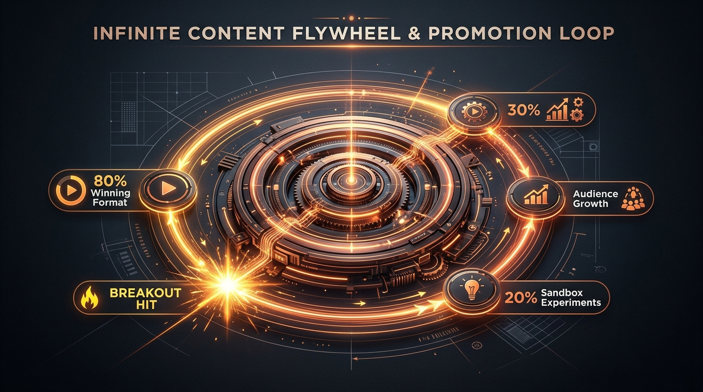
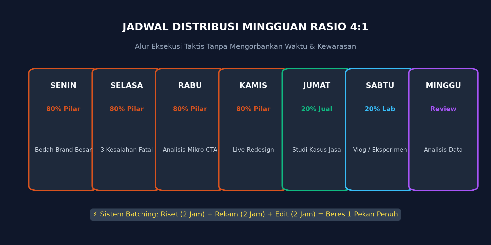
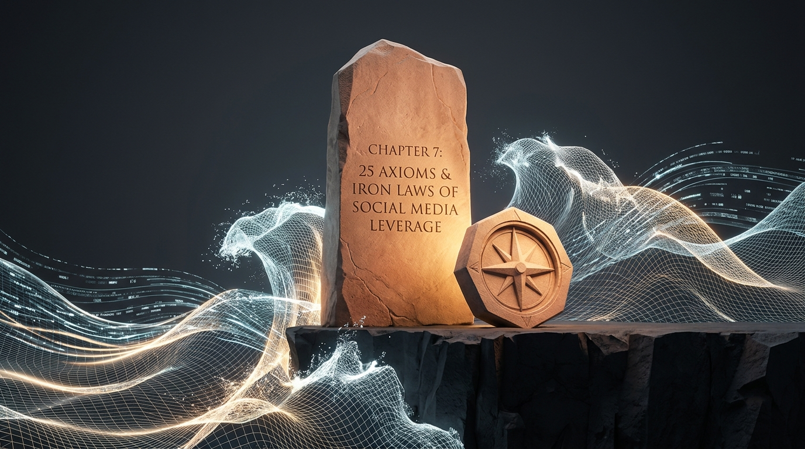

Edisi Pembaca iPad & Tablet
ATURAN 80:20 MEDIA SOSIAL
Mesin Konten Asimetris: 80% Eksploitasi Format Pemenang, 20% Eksperimen & Penjualan Jasa.
Bab 1: Paradoks Kreator — Mengapa Konsistensi Saja Tidak Cukup
Menghentikan Kebiasaan Membunuh Format Konten yang Baru Saja Berhasil

Realitas Pahit di Balik Tombol 'Posting'
Sebagian besar kreator dan pemilik bisnis digital beroperasi di bawah ilusi yang berbahaya: "Jika saya memposting konten setiap hari secara konsisten, akun saya pada akhirnya pasti akan meledak."
Kenyataannya tidak demikian.
Konsisten memposting konten yang tidak diinginkan oleh pasar hanya akan menghasilkan satu hal: Anda menjadi orang yang gagal dengan sangat disiplin.
Pasar media sosial tidak memberikan kompensasi kepada keringat, durasi rekaman, atau seberapa keras Anda berjuang. Pasar hanya memedulikan satu hal sederhana: apakah konten ini memberikan nilai spesifik yang membuat orang bersedia menukarkan waktu dan perhatian mereka?
Penyakit 'Creative ADD': Membunuh Format Pemenang
Amati pola yang berulang pada 95% kreator pemula:
Hasilnya? Video kopi tersebut hanya ditonton oleh 200 orang.
Ketika ditanya mengapa mereka tidak melanjutkan format bedah website, jawaban yang paling umum adalah:
*"Saya takut audiens saya bosan kalau saya bahas website terus."*
Ini adalah kesalahan berpikir yang fatal.
Audiens Anda tidak bosan. Anda yang bosan.
Audiens yang baru saja mengikuti akun Anda setelah menonton video bedah website mengharapkan lebih banyak bedah website. Mereka bahkan belum mengenal nama Anda dengan baik. Mereka datang untuk format dan nilai spesifik tersebut.
Saat Anda mengganti topik secara acak, Anda memutuskan rantai momentum yang baru saja dibangun oleh algoritma.
Media Sebagai Pengungkit Tanpa Izin
Dalam ekonomi digital modern, media adalah salah satu bentuk pengungkit (leverage) terbesar yang bisa diakses oleh siapa saja tanpa perlu meminta izin kepada siapa pun.
Namun, pengungkit ini hanya bekerja jika Anda memberikan sinyal yang konsisten dan jelas kepada dua pihak:
Solusinya bukan berhenti bereksperimen, melainkan mengelola eksperimen dengan batas matematika yang ketat. Inilah fondasi dari Strategi 80:20 Media Sosial.
Bab 2: Prinsip 80:20 — Eksploitasi Format Juara vs Eksplorasi Asimetris
Arsitektur Distribusi Konten yang Menggabungkan Skala dan Inovasi

Algoritma Adalah Mesin Pengenal Pola
Setiap platform media sosial modern—baik itu TikTok, Instagram, YouTube Shorts, LinkedIn, maupun X—bekerja dengan prinsip yang sama: mencocokkan konten yang tepat dengan penonton yang tepat demi mempertahankan retensi pengguna.
Algoritma bukan kurator seni yang mencari keberagaman estetika Anda. Algoritma adalah sistem pemrosesan data statistik:
Mengapa Harus 80% vs 20%?
Banyak praktisi terjebak di salah satu dari dua kutub ekstrem:
Aturan 80:20 memecahkan kebuntuan ini dengan membagi beban kerja ke dalam dua pilar yang saling mendukung:
| Komponen | Porsi | Peran Utama | Fokus Eksekusi |
|---|---|---|---|
| **Winning Engine** | **80%** | Eksploitasi Format Pemenang | Menghasilkan jangkauan luas (*reach*), pengikut baru, dan domain authority. |
| **Asymmetric Sandbox** | **20%** | Eksplorasi & Monetisasi | Menghasilkan penjualan jasa, membangun kedekatan emosional, dan riset format baru. |
Asimetri Risiko dan Peluang
Mengapa porsi eksperimen dibatasi hanya 20%?
Karena ini menciptakan struktur risiko asimetris:
Ini adalah cara kerja investor modal ventura yang diterapkan ke dalam jadwal publikasi media sosial.
Bab 3: Fondasi 80% — Memeras Format Pemenang (Studi Kasus: Diskusi & Bedah Website)
Cara Memproduksi 80 Konten Berkualitas Tinggi Tanpa Pernah Kehabisan Ide

Anatomi Format Juara
Bayangkan Anda menemukan bahwa video bertema "Diskusi & Bedah Website" adalah format yang berhasil mencuri perhatian audiens. Video tersebut memiliki retensi tinggi, komentar berisi diskusi teknis, dan mendatangkan banyak pengikut baru.
Pertanyaannya: Bagaimana cara membuat 80 konten berikutnya yang semuanya membahas bedah website tanpa terdengar mengulang hal yang sama persis?
Jawabannya adalah Metode Variasi Variabel Tunggal:
**Pertahankan hook dan struktur kerangka kerja tetap konsisten, ubah hanya subjek atau sudut pandang bedahannya.**
Mari kita pecah 80 konten tersebut menjadi 4 kelompok taktis, masing-masing berisi 20 konten.
4 Kelompok Taktis (20 Konten per Kelompok)
1. Authority Piggybacking: Bedah Website Brand / Figur Terkenal (20 Konten)
Manfaatkan rasa ingin tahu audiens terhadap nama-nama besar yang sudah mereka kenal.
2. Fatal Mistakes & Solusi Praktis (20 Konten)
Fokus pada rasa takut kehilangan uang (loss aversion), yaitu alasan utama mengapa pemilik bisnis mencari solusi website.
3. Micro-Element Teardown: Analisis Komponen Spesifik (20 Konten)
Daripada membedah seluruh website, fokuskan perhatian pada satu elemen mikro secara mendalam.
4. Live Before & After Redesign (20 Konten)
Tunjukkan bukti keahlian nyata dalam bentuk transformasi visual langsung.
Template Hook Berdaya Pikat Tinggi untuk Format 80%
Gunakan struktur pembuka yang tajam pada 3 detik pertama:
*"Jika website Anda masih meletakkan tombol ini di bagian atas, Anda sedang membuang 50% calon pembeli setiap hari. Mari kita bedah alasannya."*
*"Website seharga 100 juta ini melakukan satu kesalahan konyol yang bahkan tidak dilakukan oleh blog gratisan. Lihat bagian ini."*
*"Website ini berhasil menaikkan penjualan 35% hanya dengan mengubah satu kalimat pada halaman utama. Ini bedahannya."*
Dengan formula ini, 80 konten dapat diproduksi secara terstruktur tanpa perlu menebak-nebak apa yang harus dibahas setiap pagi.
Bab 4: Laboratorium 20% — Monetisasi Jasa, Portofolio & Eksperimen Liar
Mengubah Penonton Menjadi Pembeli dan Menemukan Terobosan Format Berikutnya

Mengapa 80% Saja Bisa Membunuh Akun Anda?
Jika Anda hanya memposting 100% video bedah website selamanya tanpa pernah melakukan hal lain, dua masalah besar akan muncul:
Porsi 20% adalah ruang perlindungan dan pertumbuhan strategis akun Anda. Dalam siklus 100 konten, 20 konten ini didistribusikan ke dalam 3 fungsi krusial:
1. Monetisasi Jasa & Studi Kasus (8 Konten)
Banyak kreator merasa bersalah atau malu saat harus menjual jasa mereka. Mereka merasa penonton akan marah jika disuguhi konten promosi.
Penonton hanya membenci promosi yang buruk: promosi yang memohon-mohon atau promosi yang tidak menawarkan nilai.
Cara terbaik menjual jasa di media sosial adalah menjual melalui bukti hasil kerja (results-based selling):
Formula Konten Penawaran Jasa:
Konten seperti ini tidak terasa seperti iklan yang mengganggu; konten ini terasa seperti pelajaran berharga yang diakhiri dengan solusi bagi mereka yang membutuhkan.
2. Personal Brand, Vlog & Filosofi Kerja (6 Konten)
Orang bertransaksi dengan manusia, bukan dengan logo perusahaan atau akun tanpa wajah.
Gunakan 6 konten ini untuk membagikan:
Konten ini membangun kepercayaan emosional mendalam (deep trust) yang tidak bisa ditiru oleh kompetitor.
3. Eksperimen Format Liar (6 Konten)
Gunakan 6 konten ini untuk mencoba format yang sama sekali baru:
Sebagian besar eksperimen ini mungkin menghasilkan performa biasa saja. Tetapi jika salah satunya mencatatkan lonjakan metrik di luar dugaan, Anda baru saja menemukan calon format juara berikutnya.
Bab 5: Siklus Promosi — Mengubah Eksperimen 20% Menjadi Format Juara Baru
Membangun Mesin Pertumbuhan Konten yang Tidak Pernah Usang

Kurva Kejenuhan Konten (*Content Decay Curve*)
Tidak ada format konten yang bisa bertahan selamanya dengan performa puncak.
Bahkan format bedah website terbaik pada akhirnya akan mengalami penurunan efektivitas setelah 6 hingga 12 bulan. Penonton lama sudah terbiasa dengan gaya penyampaian Anda, dan algoritma mulai menuntut variasi baru untuk mempertahankan durasi tonton pengguna.
Kreator amatir panik ketika format andalan mereka mulai melambat. Mereka merasa algoritma sedang menghukum mereka.
Kreator profesional menyikapi ini dengan tenang karena mereka telah menjalankan porsi 20% secara konsisten sejak hari pertama.
Protokol Promosi Format Konten
Kapan sebuah konten dari laboratorium 20% berhak dipromosikan menjadi pilar 80% yang baru?
Gunakan checklist metrik evaluasi objektif berikut:
Contoh Transisi Mulus
Katakanlah dari 6 eksperimen liar di porsi 20%, Anda mencoba format: "Wawancara Pemilik Bisnis & Bedah Finansial Website Mereka."
Format ini ternyata mendapatkan antusiasme luar biasa. Banyak pemilik bisnis lain yang berkomentar ingin diwawancarai.
Langkah strategis Anda pada siklus 100 konten berikutnya:
Dengan cara ini, akun Anda berevolusi secara organik mengikuti data pasar riil, bukan berdasarkan tebakan emosional.
Bab 6: Cetak Biru Eksekusi 100 Konten Pertama
Jadwal Mingguan, Sistem Batching, dan Alur Kerja Tanpa Burnout

Jadwal Distribusi Mingguan Berbasis Rasio 4:1
Untuk mengeksekusi rasio 80:20 dalam kehidupan sehari-hari, cara paling praktis adalah membaginya ke dalam siklus mingguan dengan pola 4 Konten Pilar : 1 Konten Eksperimen/Monetisasi.
Jika Anda memposting 5 konten per minggu:
| Hari | Kategori Konten | Tipe Konten | Tujuan Strategis |
|---|---|---|---|
| **Senin** | 80% Pilar Juara | Bedah Website Brand Terkenal | Menarik traffic baru di awal pekan. |
| **Selasa** | 80% Pilar Juara | 3 Kesalahan Fatal Website UMKM | Membangun kredibilitas dan edukasi teknis. |
| **Rabu** | 80% Pilar Juara | Analisis Mikro: Headline Penjual | Memperdalam otoritas bidang spesifik. |
| **Kamis** | 80% Pilar Juara | Live Redesign Before & After | Bukti visual keahlian praktis. |
| **Jumat** | 20% Eksperimen / Jual | Studi Kasus Klien & Penawaran Jasa | Mengonversi penonton menjadi inquiry/klien. |
| **Sabtu** | 20% Personal / Lab | Vlog Di Balik Layar / Format Baru | Memperkuat hubungan emosional personal. |
| **Minggu** | Evaluasi & Istirahat | Analisis Data & Review Metrik | Meninjau performa dan menyiapkan materi pekan depan. |
Sistem Produksi Batch (Satu Sesi untuk Satu Pekan)
Jangan pernah bangun di pagi hari lalu bertanya: "Hari ini saya mau bikin konten apa ya?"
Itu adalah resep paling pasti untuk mengalami kelelahan mental (decision fatigue) dan akhirnya berhenti memposting.
Terapkan alur kerja batching:
Dengan 6 jam kerja terfokus per minggu, kebutuhan konten Anda selama satu pekan penuh sudah selesai dieksekusi dengan standar kualitas yang konsisten.
Bab 7: 25 Aksioma & Hukum Besi Media Sosial
Prinsip-Prinsip Pokok Pengungkit Digital untuk Dibaca Berulang Kali

Kumpulan Prinsip Aksiomatik Pertumbuhan Digital
Simpan halaman ini. Buka kembali saat Anda merasa kehilangan arah atau tergoda untuk berhenti memposting format yang sedang bekerja.
10. Tiga detik pertama adalah gerbang penentu. Jika Anda gagal meyakinkan penonton dalam 3 detik pertama, 57 detik berikutnya tidak pernah ada di mata mereka.
11. Bukti visual membungkam segala keraguan. Menunjukkan perbaikan desain sebelum dan sesudah jauh lebih meyakinkan daripada menulis esai 1.000 kata tentang teori desain.
12. Ubah subjeknya, pertahankan struktur pemenangnya. Jika format bedah website berhasil, bedah 80 website berbeda dengan struktur yang sama.
13. Konversi membutuhkan instruksi yang gamblang. Jangan berasumsi penonton tahu cara menyewa jasa Anda; beri tahu mereka dengan tepat langkah apa yang harus diambil.
14. Retensi adalah metrik kebenaran. Jumlah klik bisa dipancing dengan judul sensasional, tapi waktu tonton hanya bisa diraih dengan substansi yang solid.
15. Akun yang tidak pernah menjual jasa adalah hobi yang mahal. Jangan takut menawarkan keahlian Anda kepada mereka yang membutuhkan solusi nyata.
16. Emosi menghubungkan, data meyakinkan. Gunakan cerita personal di porsi 20% untuk membangun kedekatan emosional, dan gunakan data di porsi 80% untuk membangun otoritas.
17. Kerugian Anda di porsi 20% selalu terbatas, tapi potensi keuntungannya tidak terbatas. Ini adalah definisi taruhan asimetris terbaik.
18. Format yang lelah bukan akhir dari segalanya. Format lama melambat agar format baru yang telah Anda uji di laboratorium bisa naik panggung utama.
19. Jangan menunggu inspirasi datang untuk mulai merekam. Inspirasi adalah hasil sampingan dari proses kerja yang terstruktur, bukan syarat awalnya.
20. Audiens baru tidak membaca arsip masa lalu Anda. Hal yang terasa berulang bagi Anda adalah wawasan segar bagi orang yang baru saja mengikuti akun Anda hari ini.
21. Kemudahan konsumsi menentukan laju distribusi. Buat ide yang rumit menjadi analogi visual yang bisa dipahami dalam waktu kurang dari satu menit.
22. Kritik dari orang yang tidak pernah memproduksi apa pun bernilai nol. Dengarkan data perilaku penonton, abaikan komentar negatif tanpa substansi.
23. Skalakan apa yang berhasil sampai batas maksimal. Sebelum Anda mencoba strategi baru, pastikan strategi lama sudah diperas seluruh potensinya.
24. Kepercayaan membutuhkan waktu berbulan-bulan untuk dibangun, tapi hanya butuh satu kebohongan untuk hancur. Selalu tulus dalam memberikan rekomendasi dan penilaian.
25. Mainkan permainan jangka panjang dengan orang-orang jangka panjang. Bangun reputasi digital Anda di atas dasar keahlian yang nyata dan nilai yang terbukti.